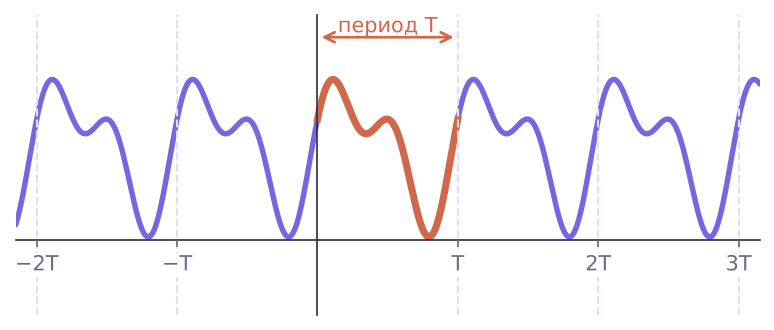

Теория
Многое в жизни повторяется через равные промежутки: дни недели — через 7 дней, времена года — через год, положение стрелки часов — через 12 часов. Функции, описывающие такие процессы, называют периодическими.
Ты уже знаешь пример: углам x и x + 2π соответствует одна и та же точка единичной окружности, поэтому sin(x + 2π) = sin x и cos(x + 2π) = cos x. Значения синуса и косинуса повторяются каждые 2π.
Функцию f называют периодической, если существует число T ≠ 0 такое, что для любого x из области определения выполняются равенства f(x − T) = f(x) = f(x + T). Число T называют периодом функции f.
Обрати внимание на две вещи. Во-первых, вместе с x в области определения должны лежать и x ± T — область «тоже повторяется». Во-вторых, график периодической функции состоит из одинаковых кусков: достаточно нарисовать его на одном отрезке длиной T и «размножить» сдвигами вдоль оси Ox.

Сколько периодов у функции
- Теорема 20.1. Если T — период, то и −T — период.
- Теорема 20.2. Если T₁ и T₂ — периоды и T₁ + T₂ ≠ 0, то T₁ + T₂ — тоже период.
- Следствие. Если T — период, то любое число nT, n ∈ Z, n ≠ 0, тоже период. Значит, у периодической функции бесконечно много периодов.
Если среди положительных периодов функции есть наименьший, его называют главным периодом.
Главный период функций y = sin x и y = cos x равен 2π; главный период функций y = tg x и y = ctg x равен π.
Докажем для синуса. Пусть T — период y = sin x. Тогда sin(x + T) = sin x при всех x, в частности при x = −T/2: sin(T/2) = sin(−T/2) = −sin(T/2), откуда sin(T/2) = 0, T/2 = πk, T = 2πk. Наименьшее положительное число такого вида — 2π, и оно действительно период.
Ещё пример: дробная часть {x} — периодическая функция с главным периодом 1 (вспомни «пилу» из § 5). А вот у постоянной функции y = 5 любое число ≠ 0 — период, и наименьшего положительного нет: главного периода может и не быть.
Возрастающая (или убывающая) функция не может быть периодической: при сдвиге на T > 0 её значение меняется, а должно остаться прежним. Поэтому y = x³ или y = √x не периодичны.
Период функции f(kx + b)
Если T — период функции y = f(x), то T/k (k ≠ 0) — период функции y = f(kx + b).
Почему: f(k(x + T/k) + b) = f((kx + b) + T) = f(kx + b). Сдвиг b период не меняет, а множитель k «сжимает» период в |k| раз. Отсюда удобные формулы:
| Функция | Главный период |
|---|---|
| sin(kx + b), cos(kx + b) | 2π/|k| |
| tg(kx + b), ctg(kx + b) | π/|k| |
Период y = sin 3x равен 2π/3, а не 6π: множитель при x делит период. А y = 3 sin x (множитель снаружи) имеет прежний период 2π.
Общий период суммы
Число, которое является периодом и функции f, и функции g, называют их общим периодом. Тогда оно — период и суммы f + g. Если периоды кратны общему числу (соизмеримы), общий период находят, как наименьшее общее кратное.
Разбор примеров
Вычисли: а) sin 750°; б) cos(−13π/3); в) tg 225°; г) ctg 17π/4.
а) 750° = 2 · 360° + 30°: sin 750° = sin 30° = 1/2.
б) −13π/3 = −4π − π/3: cos(−13π/3) = cos(−π/3) = cos π/3 = 1/2.
в) Период тангенса 180°: tg 225° = tg(45° + 180°) = tg 45° = 1.
г) 17π/4 = 4π + π/4: ctg 17π/4 = ctg π/4 = 1.
Найди главный период: а) y = cos 4x; б) y = sin(x/3 − 1); в) y = tg(2x + π/5); г) y = 5 ctg(x/2).
а) 2π/4 = π/2; б) 2π : (1/3) = 6π; в) π/2 = π/2; г) π : (1/2) = 2π (множитель 5 снаружи на период не влияет).
Найди период функции y = sin(x/2) + cos(x/3).
Период первого слагаемого 2π : (1/2) = 4π, второго 2π : (1/3) = 6π. Нужно число, кратное и 4π, и 6π: НОК(4, 6) = 12, значит, T = 12π. Проверка: 12π = 3 · 4π = 2 · 6π.
Докажи, что число π — период функции y = sin² x.
Область определения R — вместе с x содержит x ± π. sin(x + π) = −sin x (точки окружности при поворотах на x и x + π симметричны относительно начала координат), поэтому sin²(x + π) = (−sin x)² = sin² x. Так же для x − π. Значит, π — период.
Задачи урока
Реши в тетради. Ответы разберём на занятии.
Тест к уроку
Домашнее задание
Задачи Д1–Д6 ниже. Выписать в тетрадь главные периоды sin, cos, tg, ctg и формулы для периода функций вида f(kx + b); в Д6 доказательства записать полностью.